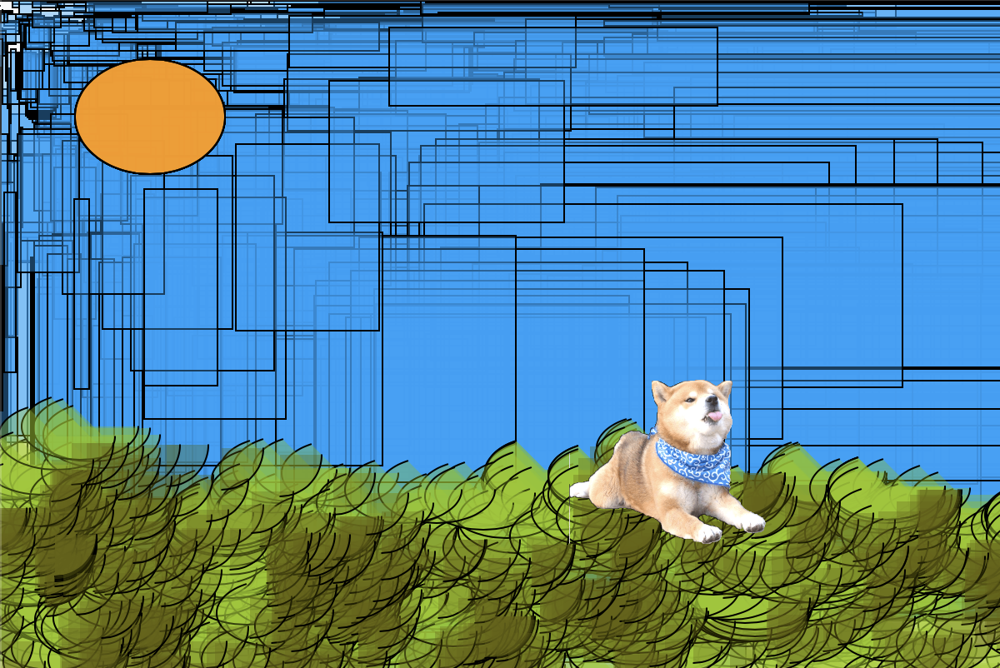

CODE-ART
The goal of the Code Art project was to learn how to use code to create a self portrait, or in other words, draw with code.
This process involved a lot of math, which is something I haven't touched in a while. I had the idea of creating pixel art, so the first step to this was to create a grid. I laid out a 16x16 grid by creating a bunch of squares, then I went one-by-one to each square to color it in. Initially, I created my portrait in grayscale, just to get a basic skeleton going. After finishing it, I went back in from the beginning to recolor in each square. It was a very tedious process, and if I had more time, I would definitely decrease the square size by about one-fourth, so that there would be a lot more detail.
This process involved a lot of math, which is something I haven't touched in a while. I had the idea of creating pixel art, so the first step to this was to create a grid. I laid out a 16x16 grid by creating a bunch of squares, then I went one-by-one to each square to color it in. Initially, I created my portrait in grayscale, just to get a basic skeleton going. After finishing it, I went back in from the beginning to recolor in each square. It was a very tedious process, and if I had more time, I would definitely decrease the square size by about one-fourth, so that there would be a lot more detail.

DIY-PS
The goal of this project was to use p5.js to create a very basic version of Photoshop.
Creating the 10 different brushes in this project was really enjoyable because of all the possibilities and directions I could have gone in. I had a few difficulties in the beginning, trying to figure out the strokes, stroke weights, and so on, but I learned pretty quickly. My favorite brush is 'g', which is an image of a shiba sticking its tongue out, and I thought this was very cute. I used several brushes to draw a landscape where the shiba is just relaxing.
To activate the different brushes, use keys '0-9' and 'g'.
1 - small purple circle, 2 - varying blue rectangles, 3 - thin green line, 4 - varying orange ellipse, 5 - purple ellipse, 6 - dark blue line, 7 - pink circle, 8 - small dark green arc, 9 - light green arc, 0 - random color circles, and g - shiba stamp
Creating the 10 different brushes in this project was really enjoyable because of all the possibilities and directions I could have gone in. I had a few difficulties in the beginning, trying to figure out the strokes, stroke weights, and so on, but I learned pretty quickly. My favorite brush is 'g', which is an image of a shiba sticking its tongue out, and I thought this was very cute. I used several brushes to draw a landscape where the shiba is just relaxing.
To activate the different brushes, use keys '0-9' and 'g'.
1 - small purple circle, 2 - varying blue rectangles, 3 - thin green line, 4 - varying orange ellipse, 5 - purple ellipse, 6 - dark blue line, 7 - pink circle, 8 - small dark green arc, 9 - light green arc, 0 - random color circles, and g - shiba stamp

GAME
The goal of this project was to create a game using Processing to learn more about coding, how it works, and how to make it interactive. This was a fun project to customize and I tried to simulate that the user/player is playing with cats. The message behind my idea is to adopt pets and not shop for them.